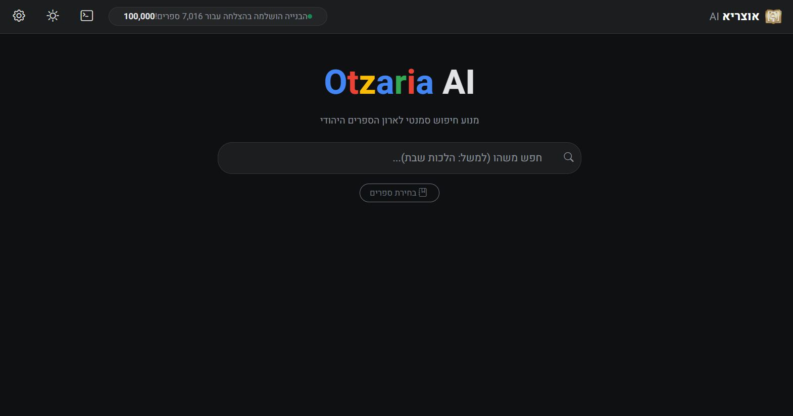
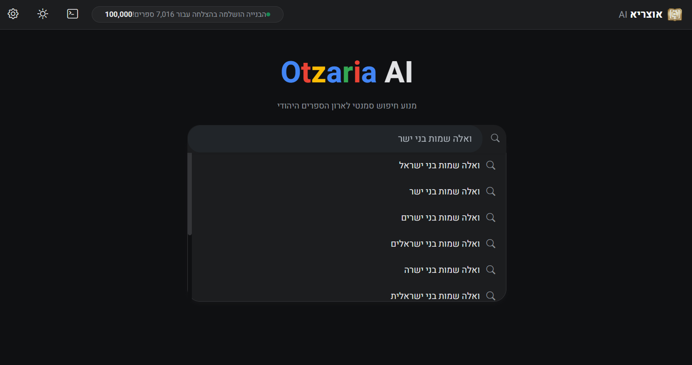
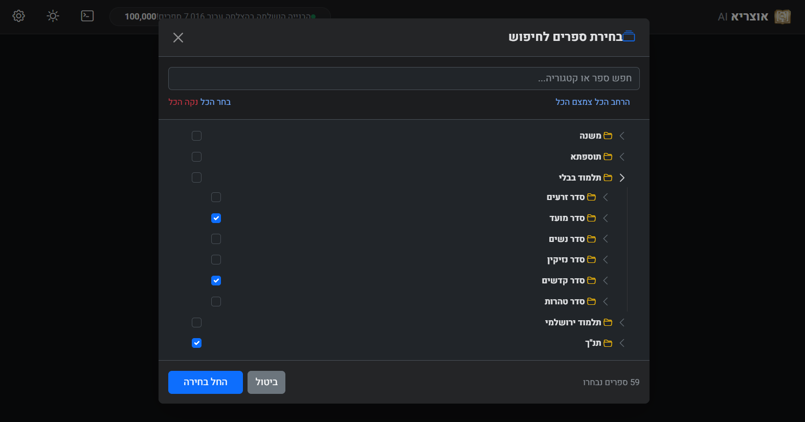
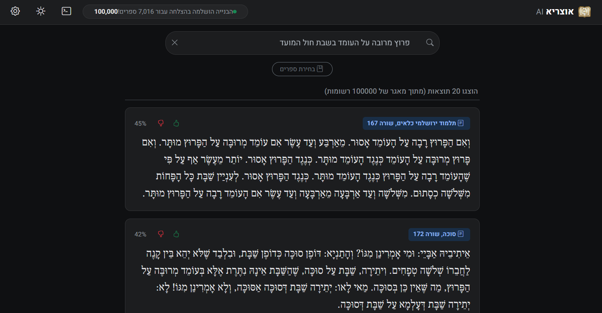

חיפוש סמנטי והיברידי
שילוב של חיפוש לפי משמעות עם התאמה טקסטואלית ישירה, כדי למצוא גם כשניסוח השאילתה חלקי.
חיפוש תורני מקומי. ברור. ישיר.
OtzariaAI נותן חיפוש סמנטי, מסננים לפי ספרים, השלמה אוטומטית והקשר מלא. ההורדות עצמן יושבות בחלון נפרד, כדי שהדף הראשי יישאר קצר ונוח.
המסך המרכזי

יכולות
שילוב של חיפוש לפי משמעות עם התאמה טקסטואלית ישירה, כדי למצוא גם כשניסוח השאילתה חלקי.
מעבר מהיר בין ספרים, תחומים ועצים, בלי לעבוד קשה כדי לצמצם את התוצאות.
מגיעים למונח הנכון גם משאילתה חלקית או מאיות לא מדויק.
לא רק תוצאה אחת, אלא קטע עם הקשר סביבו כדי להבין מהר אם זה מה שחיפשתם.
מסכים
השלמה אוטומטית
השלמה אוטומטית עוזרת להגיע לשמות, נושאים וקטעים גם כשלא זוכרים את הניסוח המדויק.

סינון ספרים
מסננים לפי ספרים ותחומים בלי להעמיס על המסך ובלי ללכת לאיבוד בתוך ספרייה רחבה.

תוצאות והקשר
התוצאות מוצגות עם הקשר סביב הקטע, כדי שיהיה ברור מהר אם זה המקור הרצוי.

התחלה
פותחים את חלון ההורדות ובוחרים את הקובץ למערכת ההפעלה שלכם.
באותו חלון בוחרים DB מלא של אוצריא או bundle של זית, לפי מה שמתאים לכם.
לאחר ההגדרה הראשונית המערכת בונה אינדקס מקומי, ומשם החיפוש נהיה מיידי.
התוכנה, DB של אוצריא, ו-bundle של זית.
שאלות
כן. הכפתורים בחלון ההורדות מובילים ישירות לקבצי ההורדה בפועל.
אוצריא מגיע כקובץ DB מלא אחד. זית מגיע כ-bundle מפוצל לשני חלקים שצריך להוריד יחד.
לא. אפשר להוריד, להגדיר DB ולהתחיל לעבוד. מאגר הקוד נשאר זמין למי שרוצה להעמיק.
טוען את גרסת התוכנה העדכנית ואת קבצי מסד הנתונים הזמינים...
גרסה עדכנית לפי GitHub Releases API.
בחרו DB מלא של אוצריא או bundle של זית.